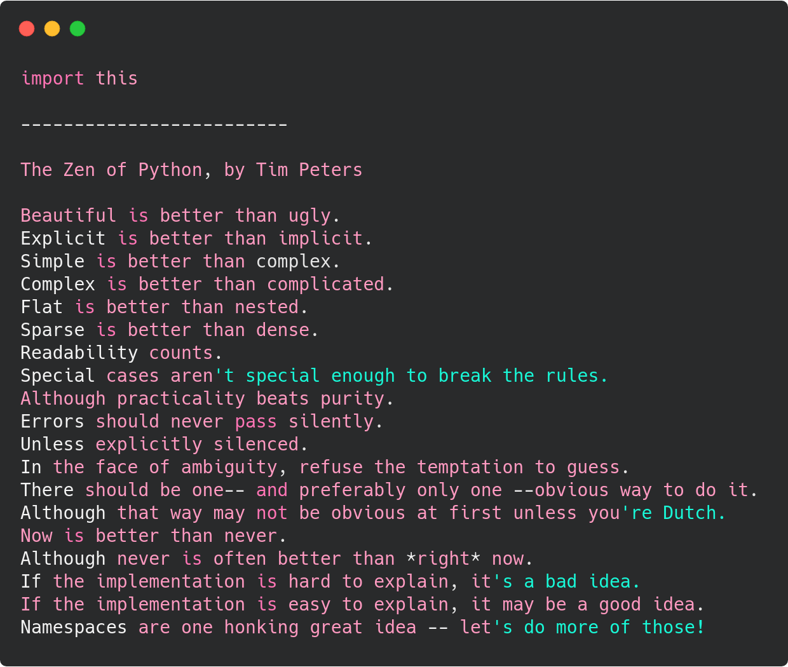

"It was Beauty killed the Beast"
Boas práticas utilizando Python e Django
Quem sou eu?
github.com/davidpierre21
@davidpierrea
Zen do Python
Coding Style
É um conjunto de guias para linguagens específicas que recomendam um estilo de código e programação, para:
- Qualidade
- Código padronizado
- Redução de complexidade
- Refatoração
- Legibilidade
PEP8
“Code is read much more often than it is written.”Guido van Rossum
Naming Styles
“There are only two hard things in Computer Science: cache invalidation and naming things.”Phil Karlton
Funções e métodos
Usar letras minúsculas e separar palavras por underscore (_)
Exemplo:
# Usar:
def minha_funcao(request, *args, **kwargs):
...
# Não usar:
def minhaFuncao(request, *args, **kwargs):
...
def MinhaFuncao(request, *args, **kwargs):
...
Variáveis
Usar letras minúsculas e separar palavras por underscore.
Ser o mais explicito possível quanto a função da variável
# Usar:
preco_fogao = fogao.preco
# Evitar:
i = fogao.preco
# Não usar:
precoFogao = fogao.preco
preco-fogao = fogao.preco
Classes
Começar cada palavra com a letra maiúscula. Utilizar CamelCase.
Exemplo:
# Usar:
class MinhaClasse(models.Model):
...
# Não usar:
class Minha_classe(models.Model):
...
class minhaClasse(models.Model):
...
Constantes
Usar letras maiúsculas separadas por underscore.
Exemplo:
# Usar:
MINHA_CONSTANTE = 500
# Não usar:
minha_constante = 500
MINHACONSTANTEVAIFICARDIFICILDELERSEFICARASSIM = 500
Code Layout
Linhas em branco:
Classes e funções de alto-nível são separadas por duas linhas em branco.
Exemplo:
class MyModel(model.Models):
pass
class OtherModel(model.Models):
pass
def funcao_que_faz_outra_coisa():
return
Linhas em branco:
Funções dentro de uma classe são separadas por uma linha em branco.
Exemplo:
class MyModel(model.Models):
def funcao_que_faz_alguma_coisa(self):
return self
def funcao_que_faz_outra_coisa(self):
return self
Tamanho da linha
Máximo recomendado: 79 caracteres.

Linters:
- Flake8
- Pylint
- Black

Classy Class-Based Views
FBV Vs CBV
Javascript em Django
Variáveis: primeira letra minúscula utilizando CamelCase
// Recomendado
$('body').on('click', selector, func) {
}
// Evitar
$('selector').click(func){
}
Settings
Separar informação sensível do Settings.
Dividir a settings para produção/local/development?
Dividir o INSTALLED_APPS
HTML
Usem tags!